Project Overview
As part of ME 240: Introduction to Design and Manufacturing, I led the CAD and manufacturing development of a fully functional rear caliper brake designed to meet ISO 4210 performance standards. My work focused on geometric design, structural refinement, tolerance planning, and simulation-driven iteration.
My Role
- Designed and iterated full caliper geometry in Siemens NX
- Prepared parts for SLS Nylon manufacturing
- Performed FEA setup, meshing, load cases, and stress interpretation
- Implemented topology optimization insights into final geometry
- Led redesign after initial testing failures
Initial CAD Geometry
The first iteration focused on meeting spatial constraints like rim clearance, rim and cable alignment. Early geometry was intentionally simple to validate load paths and pivot placement.
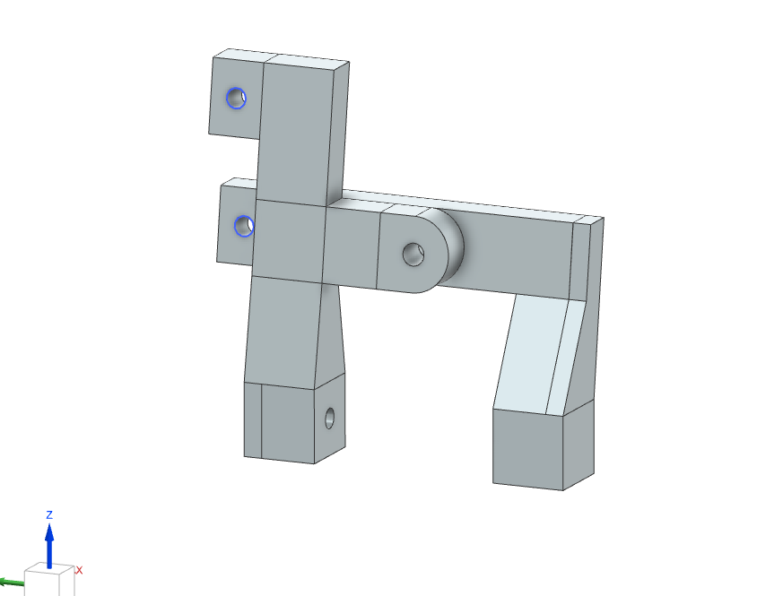
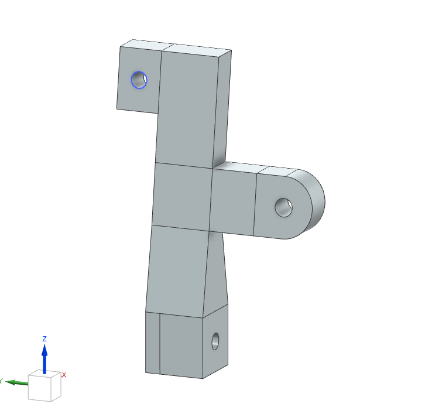
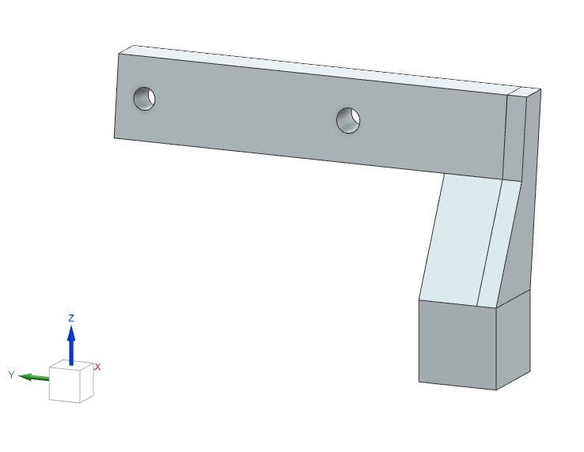
We expected stress concentrations based on our hand calculations and given the geometry of the caliper and the applied forces. FEA was performed on the initial version to understand the stress distributions in the caliper.
FEA Setup
I modeled cable tension (200 N), friction force from the rim (140 N), and pad contact constraints using NX Nastran. A 1.5 mm tetrahedral mesh was used for accuracy, with a 2 mm fallback on the right caliper due to geometry complexity. There was a pinned constraint at the pivot hole.
Initial FEA Results
The initial design exceeded the allowable tensile stress of Nylon 12 (50 MPa), reaching 69.57 MPa with a factor of safety below 1.0.
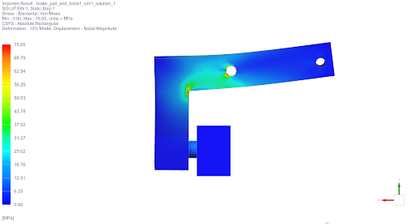
There were two main spots in the caliper that had stresses exceeding the maximum allowable stress: The inner sharp corner connecting the vertical and horizontal members of the caliper, and the pivot hole.
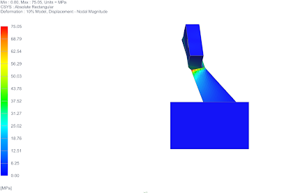
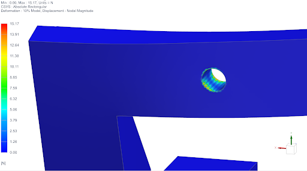
Key improvements after initial FEA
To reduce the accumulated stresses shows above I decided to:
- Change sharp corner for rounded corner geometry to follow the stress path.
- Increase the surface area of the contact at pivot whole by adding extra material to the whole. The reasoning behind this was to add material to the contact region at the pivot hole, to distribute the reaction forces from the pinned constraint along a greater area, reducing local stress.
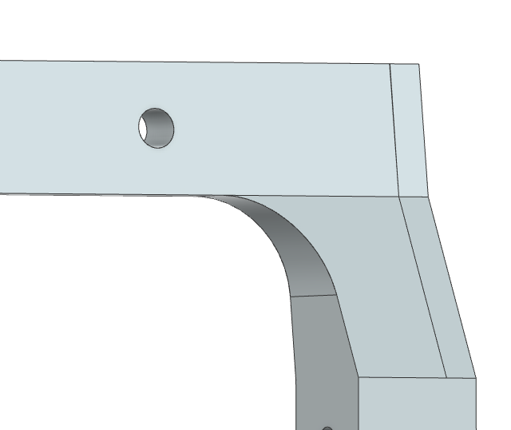
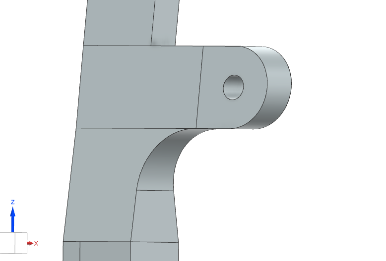
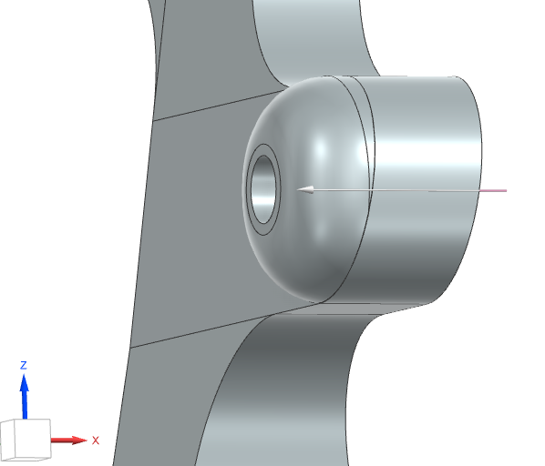
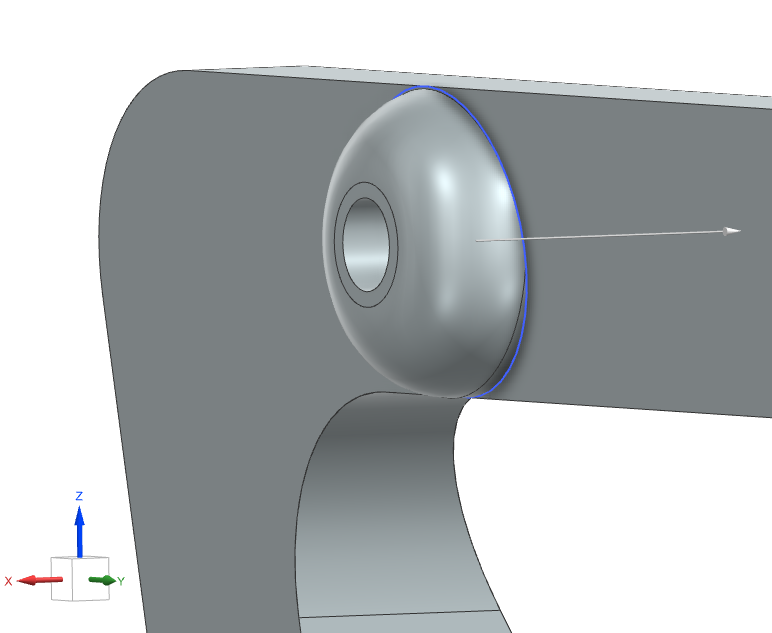
Second FEA Results
The redesigned calipers reduced peak stress to 39.5 MPa (right) and 35.9 MPa (left), achieving a system‑level factor of safety of 2.32 and cutting deflection nearly in half. After validating that the calipers met the deformation and allowable stresses with this round of FEA, the calipers were ready for topology optimization.
Topology Optimization Insights
Topology optimization highlighted low‑stress regions on the right caliper arm and suggested material removal patterns. I incorporated these results into a manufacturable organic geometry using blends and fillets.
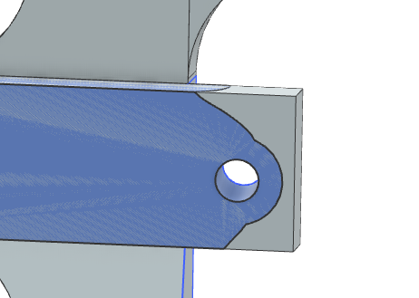
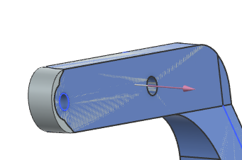
First Testing and Modifications
The optimized design was 3D printed and tested on a bike. The first round of testing showed:
- Excessive braking distance of 43 ft
- Longer than desired installation time of 15 minutes
- A calculated rim braking force of 23N
The pad misalignement was originated by a mistake in the initial wheel and frame dimensions used for the CAD model of the brake caliper. The caliper design matched the dimensions of the frame and wheel model, but the modeled itself differred from the actual geometry of the bike. This mismatch made rest only partially on the rim, applying less braking force on the rim, having a significant portion of the braking force being dispated through tire compression. The mismatch also made the brake calipers hard to mount.
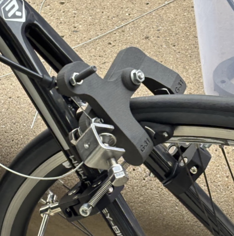
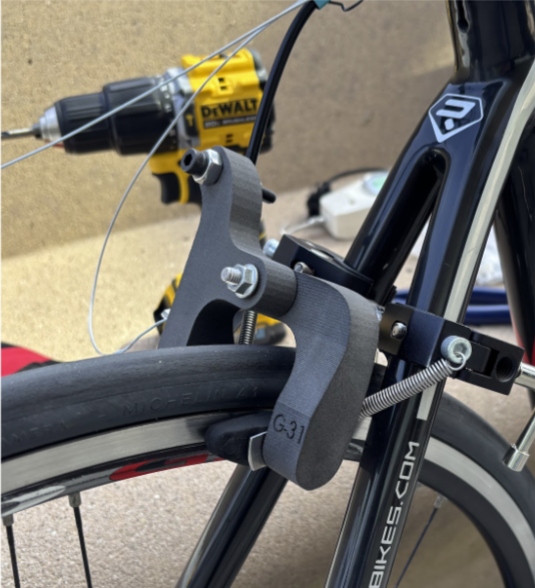
Redesigning and Second Testing Results
Re-designing after the first testing involved, increasing the length of the brake caliper arms to match bike geometry, and increasing the thickness of the arms to keep desired defelction values despite greater bending moments. FEA was performed again on the modified brake calipers to validate the its strength and maximum allowable deformation.
After redesign, stopping distance decreased from 43 feet to 29.8 feet, and the calculated rim braking force increased from 23 N to 200.1 N. Assembly time dropped from 15 minutes to 5.3 minutes.
The final design meets ISO 4210 requirements, demonstrates manufacturable geometry, and achieves strong structural performance under realistic braking loads.